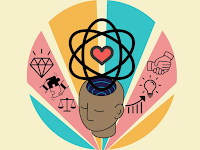
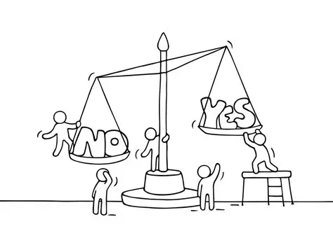

fernanda
octubre 12, 2025

Importancia: Nos ayuda a comprender por qué las personas (y las
sociedades) actúan como lo hacen. Es crucial en la ética (valores
morales) y la estética (valores artísticos).
CARACTERÍSTICAS 1.Estudia los valores Analiza qué son los valores,
su origen, su naturaleza y cómo influyen en la conducta humana y en
la sociedad.
2. Es normativa y reflexiva No solo describe los valores existentes,
sino que reflexiona sobre cuáles deberían guiar nuestras acciones
(por ejemplo, la justicia, la libertad, la solidaridad).
3. Tiene carácter subjetivo y objetivo Reconoce que los valores
pueden depender de la percepción personal (subjetivos) y, al mismo
tiempo, existir de forma universal en la cultura o la moral
(objetivos).
4. Abarca diversas áreas Se aplica a la ética, la estética, la
política, la educación, la religión y otras disciplinas donde
intervienen juicios de valor.
5. Orienta el comportamiento humano Los valores sirven como guías
para la toma de decisiones y para determinar lo que se considera
bueno, justo o deseable.
6. Es dinámica Los valores cambian con el tiempo, la cultura y las
circunstancias históricas; lo que se considera valioso en una época
puede no serlo en otra.
7. Busca la jerarquía de los valores Intenta establecer qué valores
son más importantes o superiores que otros (por ejemplo, los valores
morales sobre los materiales). Conceptos clave: Valor: Cualidad o
propiedad de un objeto, hecho o persona que lo hace estimable o
deseable (positivo o negativo). Juicio de Valor: El acto de atribuir
o asignar un valor a algo. Anti-valor: Lo opuesto al valor (lo malo,
lo feo, lo injusto, etc.).
1. Conceptos Fundamentales Definición: Es la "teoría de los
valores". Busca comprender qué son los valores (lo bueno, lo bello,
lo justo, lo útil, etc.), cómo se originan, cómo se clasifican y
cuál es su jerarquía. Origen: Aunque sus raíces se remontan a la
filosofía griega (Platón ya reflexionaba sobre el Bien y la
Belleza), la Axiología como disciplina sistemática surge a finales
del siglo XIX y principios del XX en Alemania. Filósofos importantes
en este campo incluyen a Max Scheler y Robert Hartman. Valores vs.
Anti-valores: La axiología contemporánea no solo aborda los valores
positivos, sino también los negativos (o anti-valores), analizando
los principios que permiten considerar que algo es o no valioso.
2. El Gran Debate: Objetivismo vs. Subjetivismo Un tema central y
fascinante para tu blog es la discusión sobre la naturaleza de los
valores. Objetivismo Axiológico: Sostiene que los valores existen
por sí mismos, independientemente del sujeto que los percibe. Son
cualidades que las cosas u objetos tienen (como la verdad o la
belleza). Para esta postura, el valor es indestructible y se halla
fuera del espacio y el tiempo. Subjetivismo Axiológico: Postula que
los valores son relativos y dependen de la valoración o apreciación
del sujeto. Se fundamentan en la experiencia, el deseo o la
repugnancia que algo nos produce. El valor es una atribución que el
individuo o un grupo social confiere al objeto.
3. Ramas y Ámbitos de Aplicación de la Axiología Las dos ramas
principales tradicionalmente vinculadas a la axiología son: Ética
(Axiología Moral): Se relaciona con los principios morales y las
acciones correctas (el valor del bien y del mal, lo justo e
injusto). Ejemplo: Analiza por qué la honestidad es considerada un
valor positivo universal. Estética (Axiología Estética): Se centra
en la apreciación de la belleza y el arte (el valor de lo bello y lo
feo). Ejemplo: Investiga los juicios que las personas emiten sobre
una obra de arte o un paisaje natural. Otros ámbitos de aplicación
que podrías explorar: Axiología Jurídica: Estudio de los valores en
la creación y aplicación de normas jurídicas (el valor de la
justicia, la libertad, la dignidad). Axiología Educativa: Estudio de
los valores desde el punto de vista pedagógico (cómo se enseñan y
aprenden los valores éticos, sociales y culturales).
4. Ejemplos de la Axiología en la Vida Cotidiana Conecta la
filosofía con la realidad: Toma de Decisiones: Cada decisión que
tomamos (desde elegir un trabajo hasta actuar en un conflicto) está
guiada por nuestra jerarquía de valores implícita (¿valoras más la
estabilidad o la aventura? ¿la ganancia o la ética?). Psicología
Clínica: Los terapeutas usan la axiología para ayudar a los
pacientes a explorar sus valores subyacentes y cómo estos influyen
en sus emociones y comportamientos. Alinear las acciones con los
valores profundos lleva a una vida más auténtica. Cultura y
Sociedad: Los sistemas de valores de una sociedad (libertad,
respeto, solidaridad) influyen directamente en sus leyes, sus
instituciones y su cultura. Los juicios de valor se manifiestan en
los medios de comunicación y en los mecanismos de control social.
JESUS
noviembre 20, 2025

La axiología es la rama de la filosofía que estudia los valores y su
influencia en las decisiones humanas, y esos valores (como dignidad,
libertad o igualdad) son la base ética de los derechos humanos. Esta
relación permite entender los derechos humanos no solo como normas
jurídicas, sino como exigencias morales derivadas de lo que
consideramos valioso y digno para toda persona.
Qué es la axiología La axiología estudia qué son los valores, cómo
se clasifican y cómo orientan la conducta y la organización de la
sociedad. Deriva de los términos griegos a x i o s axios (valor) y l
o g o s logos (estudio) y analiza valores éticos, morales, estéticos
y sociales, así como su jerarquía y conflictos.
Derechos humanos y sus valores Los derechos humanos se entienden
como prerrogativas o exigencias basadas en la dignidad humana,
indispensables para el desarrollo integral de cada persona. Se
apoyan en un conjunto de valores como la libertad, la igualdad, la
seguridad, la solidaridad y el respeto a la vida, que se consideran
universales y orientan la creación de normas jurídicas.
Fundamentación axiológica de los derechos humanos Fundamentar
axiológicamente los derechos humanos significa justificar su
existencia en la realidad de ciertos valores que se reconocen como
tan importantes que deben ser especialmente protegidos. Desde esta
perspectiva, los derechos humanos son derechos morales antes que
jurídicos, basados en la dignidad humana como valor central que
conecta la moral con el derecho positivo.
Valores clave: dignidad, libertad, igualdad La dignidad humana se
concibe como un valor intrínseco de todo ser humano, fundamento de
la obligatoriedad moral y jurídica de respetar sus derechos. La
libertad y la igualdad funcionan como valores que concretan esa
dignidad en la práctica social y política, orientando la formulación
de derechos y políticas públicas.
Imagen conceptual (mapa sencillo) Puede imaginarse un mapa
conceptual así: la “Axiología” lleva al “Estudio de los valores”; de
allí se identifican “Valores fundamentales” (dignidad, libertad,
igualdad, justicia, solidaridad), que sirven como “Fundamento ético
de los derechos humanos” y finalmente se expresan en “Normas y
garantías jurídicas” para proteger a las personas. Este esquema
muestra visualmente cómo el análisis filosófico de los valores
sostiene la construcción jurídica y política de los derechos
humanos.
fernanda
noviembre 20, 2025

La axiología aporta el marco de valores (dignidad, libertad,
igualdad, justicia, solidaridad) que dan sentido y justificación
moral a los derechos humanos y orientan cómo deben aplicarse en la
vida social y en las leyes. Profundizar en el tema implica ver qué
son los valores, cómo se jerarquizan y cómo se traducen en
principios jurídicos y políticas públicas.
Axiología: valores y
jerarquía La axiología estudia qué son los valores (morales,
estéticos, materiales, utilitarios, etc.), su origen y la forma en
que las personas y sociedades los ordenan en importancia. Cada
persona y cada cultura construyen una jerarquía de valores, pero la
reflexión filosófica busca identificar ciertos valores que deberían
considerarse superiores por su relevancia para la vida humana
digna.
De los valores a los derechos humanos Los valores morales
como la dignidad, la libertad y la igualdad se transforman en
principios éticos que luego se positivizan en normas jurídicas de
derechos humanos. Así, los derechos humanos se conciben como la
protección institucionalizada de esos valores superiores, de modo
que no queden solo en el plano moral sino que sean exigibles ante el
Estado.
Dignidad humana como valor central La dignidad humana se
entiende como un valor ontológico (propio del ser humano por el
hecho de ser persona) y ético (criterio para juzgar prácticas justas
o injustas). Este valor actúa como eje que conecta la moral del
respeto igualitario con el derecho positivo, justificando que todos
los seres humanos sean titulares de los mismos derechos
fundamentales.
Ética, axiología y crisis de valores La ética se
nutre de la axiología porque necesita un análisis de los valores
para proponer normas de conducta correctas; por eso ambas
disciplinas están estrechamente relacionadas. En contextos de
“crisis de valores” o relativismo moral, la reflexión axiológica
ayuda a defender ciertos valores básicos (vida, justicia,
solidaridad) como indispensables para sostener una cultura de
derechos humanos.
Idea de imagen complementaria Una imagen útil
sería un esquema donde aparezca un triángulo: en la base, “Valores
morales” (dignidad, libertad, igualdad); en el siguiente nivel,
“Principios éticos y axiológicos”; y en la cúspide, “Derechos
humanos positivizados en leyes e instituciones”. Ese triángulo
representaría cómo los derechos humanos dependen de un fundamento
axiológico sólido para tener coherencia y legitimidad.